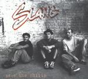

| Artist: | Slang |
| Title: | Save The Chilis |
| Label: | Carbon7 2001-C7-062 |
| Length(s): | 60 minutes |
| Year(s) of release: | 2001 |
| Month of review: | [03/2002] |
| 1) | Sugar | 3.55 |
| 2) | Yukun Slang | 5.52 |
| 3) | Small Steps (for Big People) | 4.59 |
| 4) | Bazaar | 6.30 |
| 5) | La Trilogie D'Apu | 11.06 |
| 6) | Oude Fox | 7.09 |
| 7) | Nana | 6.15 |
| 8) | Hombre Feli' | 3.55 |
| 9) | Own Wings | 3.25 |
| 10) | Save The Chilis | 2.08 |
| 11) | La Gigue | 4.13 |
Yukun Slang starts with a vocal section, but turns out largely instrumental. Soprano and alto sax alternate, making the track sound sharp at the one moment, reminiscent of David Jackson, of Van Der Graaf fame, at others.
Small Steps starts pretty groovy, with a bobbing bass, twanging guitar and once again that sax. It develops into something broader, with a fuller sound, to return to its sober basis towards the end.
Bazaar is less avant garde, and seems African in some ways, which is helped along the way by the vocals, mostly sung in what sounds like an African language to me. This track is more melodic than the others, although the ever present sax keeps one from laying back. This sax is especially dominant in the instrumental bit in between, which has it piping in a Horst Jankowski way. This track is milder than the previous ones at moments, yet extra shrill in its middle part, which didn't add much to my liking.
La Trilogie d'Apu starts with a cello (almost sounding like a didgeredoo) on an African rhythm. This tranquil peace is, how could it not be, interrupted by the ever insistent sax, but the sax seems to be lulled into complacency. And then, the sax suddenly comes to live again, hastily making its point. The second part of the trilogie comes rather suddenly, and shifts to a different theme, sax based now, featuring a slowly building speed, only to come to a grinding halt. I'm not sure about the third part, maybe it was my perception, maybe something else.
Oude Fox features a slow melody, one of those smoky jazz bar thingees. Bass with laid back sax. Could almost get you to sleep. If it weren't for the flute starting to play up, getting the sax started as well.
Nana starts with a somewhat up tempo bass line, attacked by that sax again. The bass tries to keep the lead, helped by the percussion, but can't seem to gain the upper hand in the duel with sax. It does manage to entice the sax into some semi melodic sounds, though, which in itself can be seen as something of an achievement. It does have to pay for this, of course, considering the screeching sax as the track progresses (or maybe regresses).
Hombre Feli' has an almost rocky start: distorted bass, agressive drumming. Vocally this track reminds me of Manu Chao. The sax, for once, only has a brief appearance.
Own Wings has sort of a bluesy feel about it. Different from what's happened before, but making for a nice change. Just vocals accompanied by bass. Sort of intimate, nice one.
Save The Chilis starts up tempo, reminding me of The Wipers, rather unexpectedly. This ghost remains present, this being a bass with drums track. And just when you think they've kicked it, the sax comes roaring back into life. But the rocky feel remains.
La Gigue starts with some snares being handled brutally. I'm not sure in which way, but brutal it is. This is bass with flute and rhythm track. Sort of a nice ending to it all.